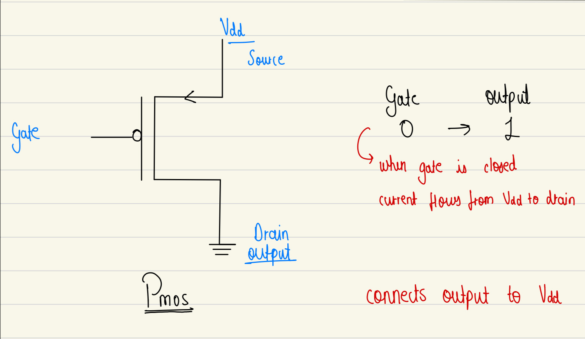
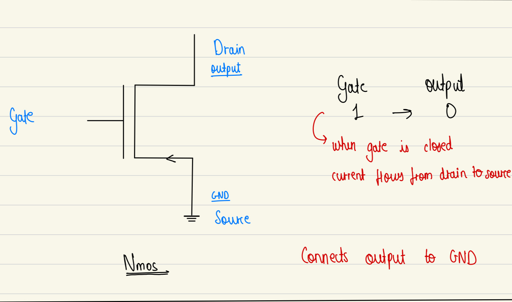

4 bit CPU ~ from scratch
This document contains the design and implementation of a simple 4-bit CPU built entirely using transistors within a simulator environment. The goal of this project is to understand and recreate the fundamental building blocks of a CPU — including logic gates, arithmetic units, memory, and control logic from the ground up. A 4-bit architecture was chosen to keep the design manageable and easy to debug, while still demonstrating all key concepts such as data flow, instruction execution, and program control. Despite its limited size, a 4-bit CPU is powerful enough to perform arithmetic operations, store data, and run simple programs. This document outlines each component, the thought process behind its construction, and how everything fits together to form a working CPU.
Table of Content
Transistors
PMOS & NMOS
PMOS and NMOS are two basic types of transistors used to build digital circuits.
PMOS - p-type MOSFET

PMOS turns ON with 0 because it needs a low signal to let current flow
NMOS - n-type MOSFET

NMOS turns ON with 1 because it needs a high signal to let current flow
Every transistor have 3 main parts:
-
Emitter
Send out charge carriers (eg: electrons) -
Base
Middle Layer that controls the transistor -
Collector
Collects the charge carrier from the emitter
Logic Gates
AND
| A | B | A AND B |
|---|---|---|
| 0 | 0 | 0 |
| 0 | 1 | 0 |
| 1 | 0 | 0 |
| 1 | 1 | 1 |
OR
| A | B | A OR B |
|---|---|---|
| 0 | 0 | 0 |
| 0 | 1 | 1 |
| 1 | 0 | 1 |
| 1 | 1 | 1 |
NAND
| A | B | A NAND B |
|---|---|---|
| 0 | 0 | 1 |
| 0 | 1 | 1 |
| 1 | 0 | 1 |
| 1 | 1 | 0 |
NOR
| A | B | A NOR B |
|---|---|---|
| 0 | 0 | 1 |
| 0 | 1 | 0 |
| 1 | 0 | 0 |
| 1 | 1 | 0 |
XOR
| A | B | A XOR B |
|---|---|---|
| 0 | 0 | 0 |
| 0 | 1 | 1 |
| 1 | 0 | 1 |
| 1 | 1 | 0 |